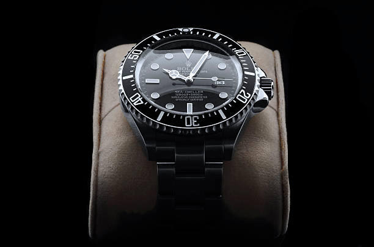

A.L MONTRES
"L'exactitude est la politesse des montres"



NOS MODELES HOMMES


NOS MODELES FEMMES


NOS BRACELETS
Notre Boutique A.L Montres : 7 rue du Louvre 75001 Paris
- Réalisateurs : Louis Allio et Antoine Salomon
- Producteurs : Louis Allio et Antoine Salomon
- Concepteurs : Louis Allio et Antoine Salomon
- Fabricants : Louis Allio et Antoine Salomon
Ceux qui achètent nos produits sont des beau garçons!